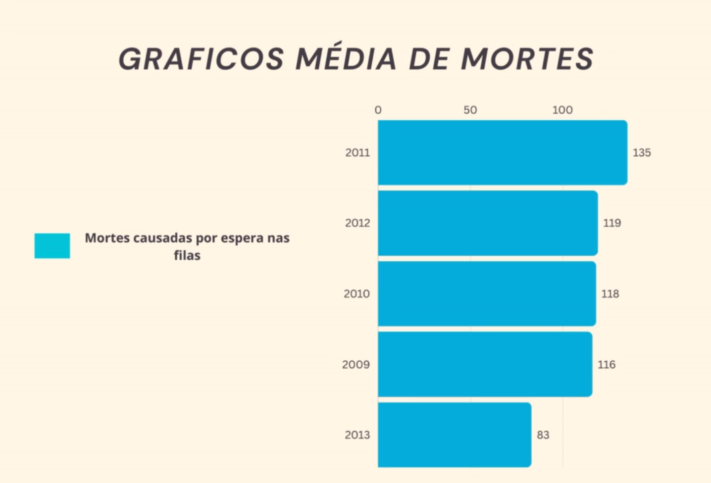

Para um melhor entendimento sobre nosso projeto leia o readme colocado abaixo junto com o grafico para mais informações
Descrição do Projeto: O Sistema de Gestão Médica é uma aplicação desenvolvida para otimizar a alocação de médicos, considerando suas especialidades, disponibilidade e a urgência dos casos dos pacientes. A proposta é agilizar o atendimento, garantindo a presença de médicos qualificados, especialmente em situações de emergência.
Instruções de Uso: Preencha as informações pessoais, especialidades e disponibilidade de cada médico. Utilize a opção de cadastro para incluir novos profissionais. Avaliação de Necessidade e Urgência:
O sistema prioriza os casos de emergência dos pacientes de acordo como foram cadastrados. Garanta que as informações fornecidas sejam precisas para uma avaliação eficiente. Alocação Automática:
O sistema aloca automaticamente um médico com base na necessidade do caso e reserva no mínimo dois médicos para situações de emergência. Alerta de Emergência para Médicos:
Médicos serão notificados em caso de emergência, com detalhes sobre o caso e a localização do paciente. Requisitos: Informações básicas dos médicos e pacientes (nome, horários disponíveis, nível de urgência do caso)
Acima está o grafico mostrando a importancia desse caso e como ele impacta o mundo atualmente